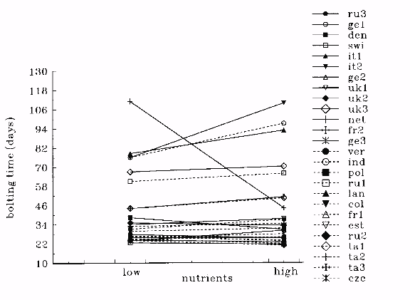

REACTION NORMS OF Arabidopsis. III. RESPONSE TO NUTRIENTS IN 26 POPULATIONS FROM A WORLD-WIDE COLLECTION
Massimo Pigliucci* and Carl D. Schlichting
Department of Ecology and Evolutionary Biology
University of Connecticut
Storrs
CT 06269
USA
* Author for correspondence. Currently at: Ecology and
Evolutionary Biology, Box G-W, Brown University, Providence, RI
02912 (pigliucc@brownvm.brown.edu)
American Journal of Botany, in press
Key-words: Arabidopsis, phenotypic plasticity, nutrients, phenotypic integration
Abstract
The study of phenotypic plasticity, the ability of a given genotype to express different phenotypes as environments change, is becoming a central focus of ecological genetics and evolutionary theory. Studying 26 populations, we found significant among population genetic variation for eight of the nine traits measured, as well as plasticity in four traits. The multivariate association of the nine traits defines four major groups of covarying characters, each of which may be plastic or not, depending on the particular population.key-words: Arabidopsis thaliana, phenotypic plasticity, nutrients, ecotype
Introduction
The primary ecological and evolutionary role of the interactions between genotypes and environments in shaping phenotypes has been increasingly appreciated by students of phenotypic evolution (Schlichting 1986; Sultan 1987; Scheiner 1993). In this paper we address two basic questions concerning reaction norms of A. thaliana as a model system: (i) is there natural variation for reaction norms within the species? In the past, some authors have used only a restricted number of lines from this species (Jones 1971) or, if more were tested (Westerman and Lawrence 1970) most of them are no longer available for further studies. It is important to characterize the populations that are currently available from standardized sources such as the Arabidopsis Biological Research Center. (ii) Which groups of phenotypic characters tend to covary in A. thaliana, and how are these sets of covariation affected by environmental changes? The existence of groups of character correlations has long been pointed out, and its importance for the ecology of the species (Clausen and Hiesey 1960; Schlichting 1986) or as indicators of developmental constraints (Gould 1984; Stearns, de Jong, and Newman 1991) widely debated. We demonstrate the existence of distinct and ecologically meaningful trait covariation in A. thaliana, as well as of genetic variability for the response to the environment of the principal components defined by trait covariation.
Materials and Methods
Seed stocks from 26 populations of Arabidopsis thaliana were obtained from the Arabidopsis Biological Resource Center at Ohio State University. Seeds were soaked in water on filter paper in petri dishes for 24 hours to induce germination. They were then individually transferred to 5.7 cm pots filled with Fafard Superfine Germinating Mix, and put in a growth chamber at a constant temperature of 25xC and an average relative humidity of 65%. The light cycle was set at a daylength of 14h. Two levels of nutrients were supplied, adding either 1 or 5 pellets of 14-14-14 N-P-K Slater Osmocote at potting time. Nine characters were measured during or at the end of the ontogeny of each plant, in order to summarize important aspects of the phenotype of A. thaliana: bolting time, flowering time, senescence time, height at flowering, final height, number of basal branches, number of lateral branches, and fruit production.A two-way analysis of variance was performed on the nine traits, investigating the effects of the following sources of variation: population (genetic variation for character means among provenances); treatment (amount of phenotypic plasticity); and population x treatment interaction (PxT, pattern of phenotypic plasticity, or genetic variation for plastic responses among provenances). Reaction norms (graphs of environment vs. phenotype) were plotted for each population and each character. To investigate the multivariate relationships among the nine characters, and how they change with the environment, a principal component analysis was carried out on the total data set. Sets of covarying characters were identified by the relative loadings of the traits on the major eigenvectors.
Results and Discussion
The univariate analyses of variance and the scatterplots of the norms of reaction strongly indicate the presence of genetic variation, plasticity, and genetic variation for plasticity for several traits in Arabidopsis thaliana. In this study most of the significant Population x Treatment interaction terms are due to a relatively small number of populations characterized by highly distinctive reaction norms (see Figure 1 for an example concerning bolting time). Figure 1. Population reaction norms for bolting time. Notice the markedly different behavior of a few populations (e.g., Netherlands and Italy-2).
The contrasts among these populations should therefore be a primary focus of further research looking into both the genetic basis and the ecological significance of differences in plasticity. Zhang and Lechowicz (1994) found heritable phenotypic variation for flowering time in 13 populations coming from an extensive latitudinal range, together with a positive correlation between flowering time and reproductive output. Later flowering genotypes also showed an increased plasticity to changes in nutrient conditions. Therefore, they concluded that selection for later flowering would also produce higher plasticity by correlated response.
The variation for the nine traits measured in this study was distributed predominantly along four major axes in multivariate space (see Table 1, below).
Table 1 Principal component analysis of the multivariate response of nine characters measured in 26 populations of Arabidopsis thaliana exposed to two levels of nutrients.
PC-1 PC-2 PC-3 PC-4
eigenvalue 2.7 1.8 1.4 1.2
% of expl. var. 29.5 20.0 15.0 13.1
===============================================================
Bolting time -0.48 +0.25 +0.37 +0.11
Flowering time +0.25 -0.04 +0.66 +0.08
Senescence time -0.20 +0.35 -0.39 +0.22
N. leaves -0.44 +0.35 +0.36 +0.11
Hgt. at flowering +0.46 0.00 +0.33 +0.02
Final height +0.15 +0.43 +0.07 -0.59
Basal branches +0.26 +0.27 +0.01 +0.67
Lateral branches +0.13 +0.53 -0.03 -0.29
N. fruits +0.38 +0.39 -0.17 +0.19
The first principal component, mostly influenced by developmentally early characters and fruit production, shows interesting connections among key characters in A. thaliana. In particular, there is a non surprising direct covariation between bolting and number of leaves: the later a plant bolts, the more leaves it has in its rosette. At the same time, these two traits are negatively related to height at flowering and fruit production: this means that if the plant has a rapid life cycle and produces a small rosette, it eventually is able to grow taller and have a higher reproductive fitness. The second principal component represents a compound measure of fitness, in that final plant size, number of lateral branches on the main stem, and total fruit output all weigh positively on it. Therefore, larger plants have a highly branched architecture and a higher reproductive fitness. The third principal component points to an interesting trade-off between flowering time and senescence time. It is useful to recall that these two traits are defined as segments of the life cycle (from bolting to flowering and from flowering to senescence), and therefore there is no a priori statistical expectation for them to be correlated (and certainly not negatively correlated). We suggest that these two phases of the life cycle might be influenced by largely overlapping genes with pleiotropic effects, which together might set constraints to the total life span of the plant (if an individual flowers later it senesces faster, and vice versa). A fascinating possibility that remains to be explored is that such a constraint may in fact be the result of selection for an overall short life cycle under disturbed natural settings. The fourth principal component also highlights an interesting possible trade-off: plants that have a taller central stem tend to have fewer basal branches, i.e., fewer secondary stems. Secondary stems (otherwise known as coflorescences) represent a developmentally open fate, in the sense that they can originate more coflorescences, or differentiate into flowers (Schultz and Haughn 1993). If there is a genetic switch responsible for the two strategies, the genes involved might be controlling the whole-plant architecture, and might be doing so by modulating their response to environmental conditions. Further characterization of these populations might yield very interesting insights into the possible role of regulatory genes that respond directly to environmental variation ("plasticity genes", sensu Schlichting and Pigliucci 1995).
Most populations show little plasticity for any of the principal components, and do not show much genetic variation either: their centroids are concentrated toward the central portion of all four components. This means that the "typical" A. thaliana (including the laboratory lines Landsberg and Columbia) displays a not too rapid phenology, a good reproductive output, and tend to be short with few lateral branches or tall with few basal branches. In contrast, values for some populations indicate genetic variation, and very distinctive patterns of plasticity, at the multivariate level. We have provenances that are distinct from the average population from a genetic point of view, but do not show any plasticity for any principal component (e.g., France-2). All aspects of their multivariate phenotype are highly canalized against environmental variation (at least of the type induced by changes in nutrients). Some populations show strong environmental effects on some principal components, while being canalized for others (e.g., Russia-1 and Italy-1). There is no consistency among populations for which aspects of the multivariate phenotype are canalized or plastic, which suggests natural variability for the degree of multivariate plasticity, and the possibility of investigating its genetic bases by controlled crosses of these ecotypes or by selection experiments. Finally, some populations appear to have all their covariance sets environmentally affected, although to different degrees (e.g., Italy-2). Again, the existence of such a range is a promising feature for studies aimed at addressing the very complex problem of plasticity vs. canalization at the whole phenotype level. The debate between the adaptive advantage of integrated responses (Schlichting 1986) and their nonadaptive role as indicators of constraints (Gould 1984) is fundamental to our understanding of phenotypic evolution, and it is easy to concede points to both schools of thought, given the complexity of the observable patterns. Clearly more efforts in this direction are likely to yield fascinating insights into multivariate phenotypic evolution.
Acknowledgements
We are in debt to Richard Abbott for comments on a previous draft of this manuscript. This work was partially supported by NSF dissertation grant DEB-9122762 and a Sigma-Xi Research-in-Aid Grant to MP, and by NSF grant DEB-9220593 to CDS.
References
Clausen, J. and W. M. Hiesey. 1960. The balance between coherence and variation in evolution. Proceedings of the National Academy of Sciences USA 46: 494-506.Gould, S. J. 1984. Covariance sets and ordered geographic variation in Cerion from Aruba, Bonaire and Curacao: a way of studying nonadaptation. Systematic Zoology 33: 217-237.
Jones, M. E. 1971. The population genetics of Arabidopsis thaliana. II. Population structure. Heredity 27: 51-58.
Scheiner, S. M. 1993. Genetics and evolution of phenotypic plasticity. Annual Review of Ecology and Systematics 24: 35-68.
Schlichting, C. D. 1986. The evolution of phenotypic plasticity in plants. Annual Review of Ecology and Systematics 17: 667-693.
Schlichting, C. D. and M. Pigliucci. 1995. Gene regulation, quantitative genetics, and the evolution of reaction norms. Evolutionary Ecology, in press.
Schultz, E. A. and G. W. Haughn. 1993. Genetic analysis of the floral initiation process (FLIP) in Arabidopsis. Development 119: 745-765.
Stearns, S., G. de Jong and B. Newman. 1991. The effects of phenotypic plasticity on genetic correlations. Trends in Ecology and Evolution 6: 122-126.
Sultan, S. E. 1987. Evolutionary implications of phenotypic plasticity in plants. Evolutionary Biology 21: 127-178.
Westerman, J. M. and M. J. Lawrence. 1970. Genotype-environment interaction and developmental regulation in Arabidopsis thaliana. I. Inbred lines; description. Heredity 25:609-627.
Zhang, J. and M. J. Lechowicz. Correlation between time of flowering and phenotypic plasticity in Arabidopsis thaliana. American Journal of Botany 81:1336-1342.
 Return to Contents Page: Weeds World Vol2(i)
Return to Contents Page: Weeds World Vol2(i)